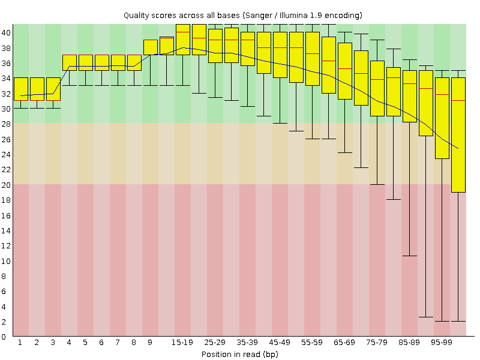
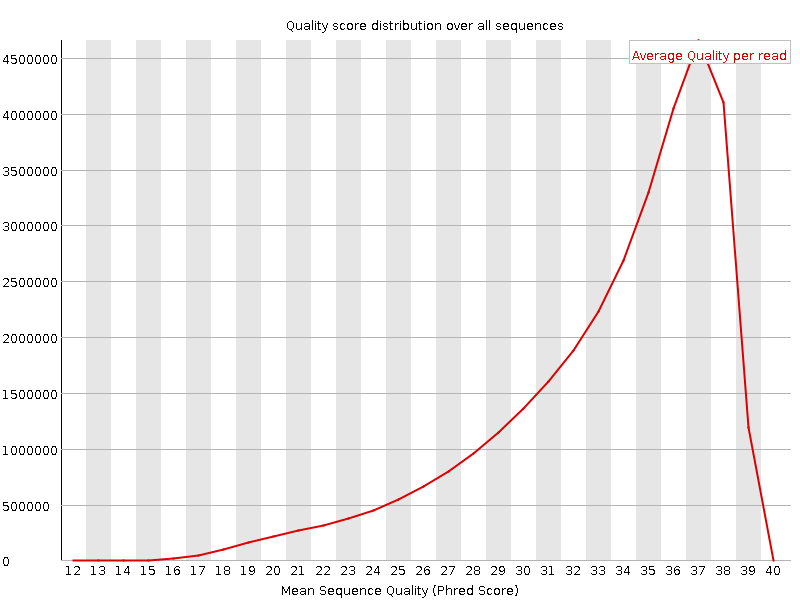
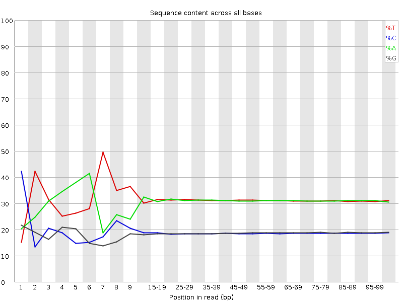
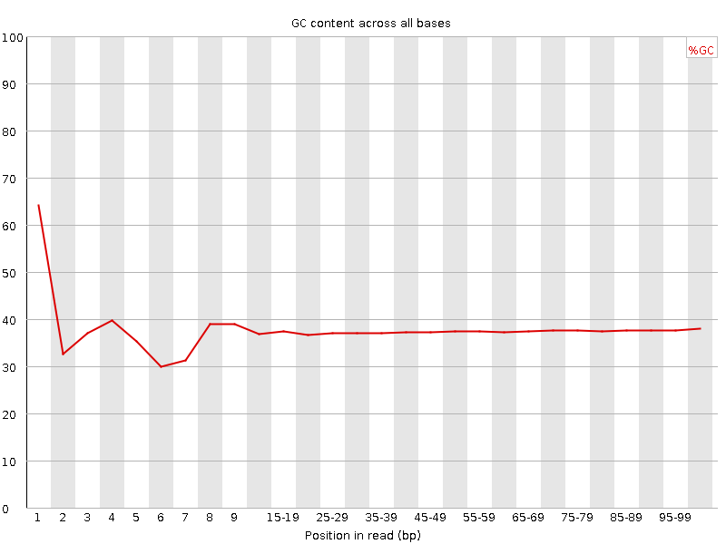
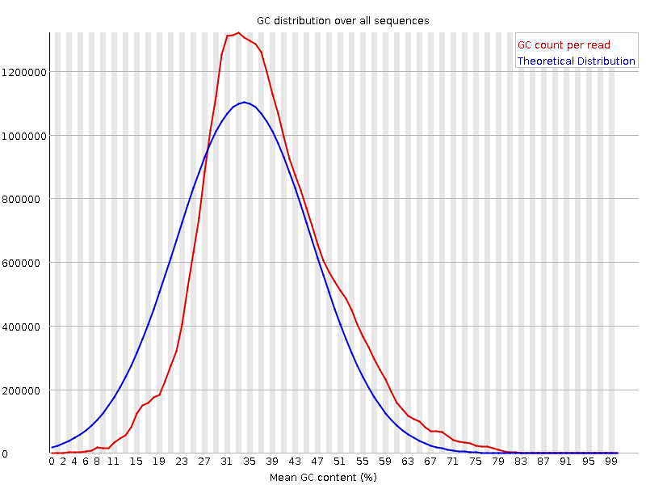
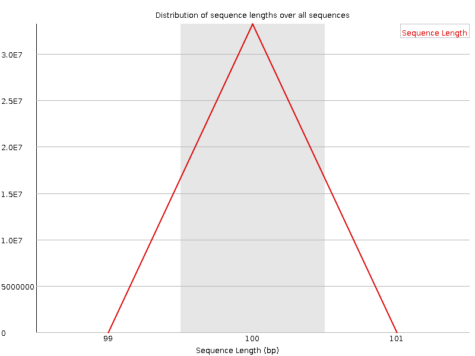
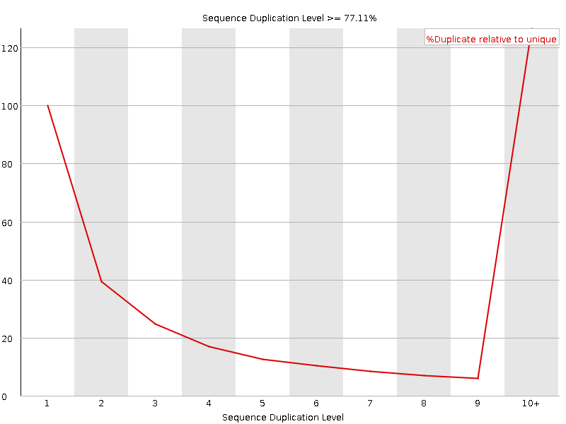
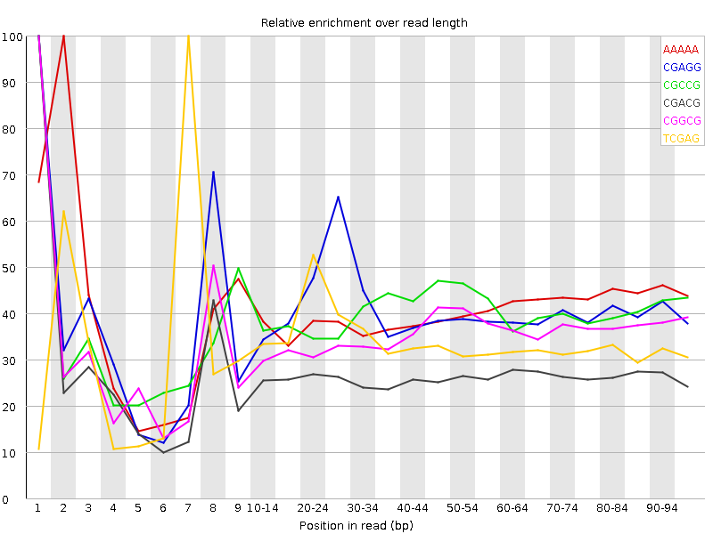

![[OK]](Icons/tick.png) Basic Statistics
Basic Statistics
| Measure | Value |
|---|---|
| Filename | t4_1.fq |
| File type | Conventional base calls |
| Encoding | Sanger / Illumina 1.9 |
| Total Sequences | 33208262 |
| Filtered Sequences | 0 |
| Sequence length | 100 |
| %GC | 37 |
Per base sequence quality

Per sequence quality scores

![[FAIL]](Icons/error.png) Per base sequence content
Per base sequence content

Per base GC content

![[WARN]](Icons/warning.png) Per sequence GC content
Per sequence GC content

Per base N content

Sequence Length Distribution

Sequence Duplication Levels

Overrepresented sequences
| Sequence | Count | Percentage | Possible Source |
|---|---|---|---|
| CTAATTTTCATCTTAATTCAACATCGAGGTCGCAAACATCTTTATCTATA | 70780 | 0.2131397301069234 | No Hit |
| CTTTCGTACAATTAATTAATATTTTATTATAGATAGAAACCAATCTGACT | 61425 | 0.18496902969508008 | No Hit |
Kmer Content

| Sequence | Count | Obs/Exp Overall | Obs/Exp Max | Max Obs/Exp Position |
|---|---|---|---|---|
| AAAAA | 20943830 | 2.2666972 | 5.5951085 | 2 |
| CGAGG | 2661835 | 2.1678197 | 5.3241515 | 1 |
| CGCCG | 1625405 | 2.1563017 | 5.3813667 | 1 |
| CGACG | 2514810 | 2.0287166 | 7.638213 | 1 |
| CGGCG | 1441510 | 1.9305965 | 5.435306 | 1 |
| TCGAG | 3681675 | 1.7926968 | 5.2860637 | 7 |
| CGCGG | 1336390 | 1.7898105 | 5.605079 | 1 |
| CTCGA | 3629490 | 1.750577 | 8.516618 | 1 |
| CGCGA | 2054450 | 1.6573406 | 5.921465 | 1 |
| CTGGA | 3346650 | 1.6295651 | 7.059714 | 1 |
| CGAGA | 3232035 | 1.5854789 | 5.3249807 | 1 |
| CCGGC | 1180295 | 1.5658084 | 5.431053 | 1 |
| ATCGA | 5307525 | 1.5566672 | 5.545027 | 6 |
| CGCCA | 1921775 | 1.5356524 | 5.162172 | 1 |
| CTCCA | 3195850 | 1.5268492 | 5.9881244 | 1 |
| GTCGA | 3053560 | 1.4868524 | 5.0422187 | 1 |
| CTTTT | 8511065 | 1.4704859 | 5.7837076 | 1 |
| CTTTC | 5101450 | 1.4602442 | 6.486346 | 1 |
| CTCGT | 3011560 | 1.4417968 | 7.145164 | 1 |
| CTGGC | 1778680 | 1.4242659 | 5.1321588 | 1 |
| CTTCG | 2949380 | 1.4120277 | 5.581742 | 1 |
| CGAAG | 2870485 | 1.4081202 | 5.1002703 | 1 |
| CTCGC | 1773375 | 1.4065914 | 6.2440944 | 1 |
| CTCGG | 1728915 | 1.3844168 | 7.5409822 | 1 |
| CGAAA | 4253325 | 1.2567688 | 5.305132 | 1 |
| CTTGG | 2520715 | 1.218322 | 5.6436086 | 1 |
| CTTTG | 4157630 | 1.2014438 | 5.2581167 | 1 |
| GAATC | 4067300 | 1.1929162 | 5.1867585 | 4 |